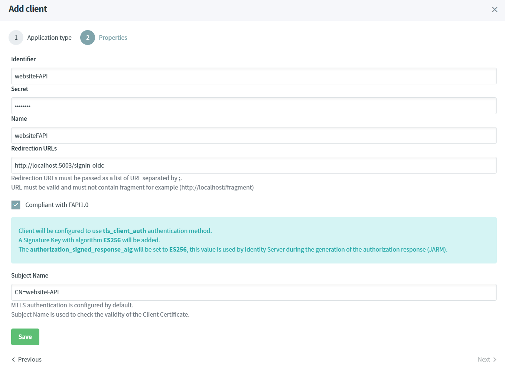

Protect server-side application compliant with FAPI using ASP.NET CORE
Warning
Before you start, Make sure you have an up and running IdentityServer and IdentityServer website.
In this tutorial, we are going to explain how to create a highly secured ASP.NET CORE application, which respects all the security recommendations from FAPI https://openid.net/specs/openid-financial-api-part-2-1_0.html#confidential-client :
- The client shall support MTLS as mechanism for sender-constrained access tokens.
- The client shall include
requestorrequest_uriparameter as defined in Section 6 of OIDC in the authentication request. - If the Authorization Request is too large for example a Rich Authorization Request, then it is recommended to use Pushed Authorization Request (PAR).
- JWT-Secured OAUTH2.0 authorisation response (JARM) is used to sign and / or encrypt the authorisation response, it protects against replay, credential leaks and mix-up attacks.
- The PS256 or ES256 algorithms must be used.
The website will have the following configuration :
| Configuration | Value |
|---|---|
| Client Authentication Method | tls_client_auth |
| Authorization Signed Response Algorithm | ES256 |
| Identity Token Signed Response Algorithm | ES256 |
| Request Object Signed Response Algorithm | ES256 |
| Pushed Authorization Request | Yes |
| Response Mode | jwt |
Source Code
The source code of this project can be found here.
Add a client
- Open the IdentityServer website http://localhost:5002.
- In the Certificate Authorities screen, select one Certificate Authority. Don't forget, the Certificate Authority must be trusted by your machine. You can download it and import into the correct Certificate Store.
- Click on the
Client Certificatestabulation, and click on theAdd Client Certificatebutton. - Set the Subject Name value to
CN=websiteFAPIand click onAdd.

- Click on the
Downloadbutton next to the certificate. - Navigate to the Clients screen and click on the
Add clientbutton. - Select
Web applicationand click on Next.

- Fill-in the form like this. You can specify any password, it will not be used because we are using
tls_client_auth. Click onSavebutton.

- The generated JSON Web Key will be displayed, copy the value into a text file.

Now your client is ready to be used, you can develop the ASP.NET CORE website.
Create ASP.NET CORE application
The last step consists to create and configure an ASP.NET CORE project.
- Open a command prompt, run the following commands to create the directory structure for the solution.
mkdir HighlySecuredServersideWebsite
cd HighlySecuredServersideWebsite
mkdir src
dotnet new sln -n HighlySecuredServersideWebsite
- Create a web project named
Websiteand install theSimpleIdServer.OpenIdConnectnuget package.
Warning
This Nuget Package supports all the features coming from the official Microsoft.AspNetCore.Authentication.OpenIdConnect Nuget Package.
It also supports new features like tls_client_auth Client Authentication Method, new authorization responses like :jwt, query.jwt, fragment.jwt, form_post.jwt, fragment.jwt, and Pushed Authorization Request.
cd src
dotnet new mvc -n Website
cd Website
dotnet add package SimpleIdServer.OpenIdConnect
- Add the
Websiteproject into your Visual Studio solution.
cd ..\..
dotnet sln add ./src/Website/Website.csproj
- Edit the
Program.csfile and configure the OPENID authentication with the following configuration. TheJWKvariable MUST be replaced by the content of the file you've previously copied, and the certificateCN=websiteFAPI.pfxMUST be replaced by the one you've previously downloaded.
| Configuration | Value |
|---|---|
| Client Authentication Method | tls_client_auth |
| Authorization Signed Response Algorithm | ES256 |
| Identity Token Signed Response Algorithm | ES256 |
| Request Object Signed Response Algorithm | ES256 |
| Pushed Authorization Request | Yes |
| Response Mode | jwt |
using Microsoft.IdentityModel.Tokens;
using System.IdentityModel.Tokens.Jwt;
using System.Security.Cryptography.X509Certificates;
var builder = WebApplication.CreateBuilder(args);
// Add services to the container.
builder.Services.AddControllersWithViews();
const string JWK = "{\"alg\":\"ES256\",\"crv\":\"P-256\",\"d\":\"mf1MvmivRY_TdH-J7gAt7ak4DYGnyLIqIZ3dgHL5NHk\",\"kid\":\"keyId\",\"kty\":\"EC\",\"use\":\"sig\",\"x\":\"MdwuTbn0TCQYgsER0-NeE3vtSx3H4HD9sSD7Zfkxt8k\",\"y\":\"ec27GOT5l3Mu8pzZsj6doPBNbCIp_5afjoP66qPfu4o\"}";
var jsonWebKey = JsonExtensions.DeserializeFromJson<JsonWebKey>(JWK);
var certificate = new X509Certificate2(Path.Combine(Directory.GetCurrentDirectory(), "CN=websiteFAPI.pfx"));
builder.Services.AddAuthentication(options =>
{
options.DefaultScheme = "Cookies";
options.DefaultChallengeScheme = "sid";
})
.AddCookie("Cookies")
.AddCustomOpenIdConnect("sid", options =>
{
options.SignInScheme = "Cookies";
options.ResponseType = "code";
options.ResponseMode = "jwt";
options.Authority = "https://localhost:5001/master";
options.RequireHttpsMetadata = false;
options.ClientId = "websiteFAPI";
options.GetClaimsFromUserInfoEndpoint = true;
options.SaveTokens = true;
options.MTLSCertificate = null;
options.ClientAuthenticationType = SimpleIdServer.OpenIdConnect.ClientAuthenticationTypes.TLS_CLIENT_AUTH;
options.RequestType = SimpleIdServer.OpenIdConnect.RequestTypes.PAR;
options.MTLSCertificate = certificate;
options.SigningCredentials = new SigningCredentials(jsonWebKey, jsonWebKey.Alg);
});
var app = builder.Build();
// Configure the HTTP request pipeline.
if (!app.Environment.IsDevelopment())
{
app.UseExceptionHandler("/Home/Error");
// The default HSTS value is 30 days. You may want to change this for production scenarios, see https://aka.ms/aspnetcore-hsts.
app.UseHsts();
}
app.UseCookiePolicy(new CookiePolicyOptions
{
Secure = CookieSecurePolicy.Always
});
app.UseHttpsRedirection();
app.UseStaticFiles();
app.UseRouting();
app.UseAuthorization();
app.MapControllerRoute(
name: "default",
pattern: "{controller=Home}/{action=Index}/{id?}");
app.Run();
- Add a
ClaimsControllercontroller with one protected operation.
public class ClaimsController : Controller
{
[Authorize]
public IActionResult Index()
{
return View();
}
}
- Create a view
Views\Claims\Index.cshtmlwith the following content. It will display all the claims of the authenticated user.
<ul>
@foreach (var claim in User.Claims)
{
<li>@claim.Type : @claim.Value</li>
}
</ul>
- In a command prompt, navigate to the directory
src\Websiteand launch the application.
dotnet run --urls=http://localhost:5003
- Browse this URL http://localhost:5003/claims, the User-Agent is automatically redirected to the OPENID server.
Submit the credentials - login :
administrator, password :passwordand confirm the consent. You'll be redirected to the following screen where your claims will be displayed.